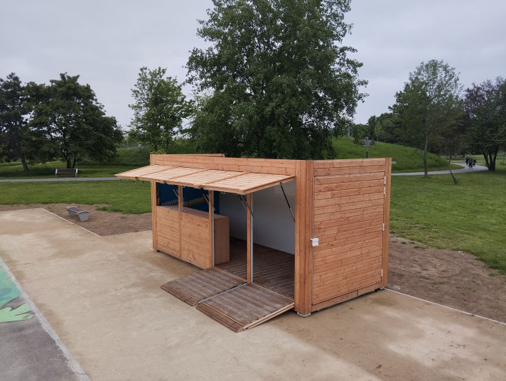
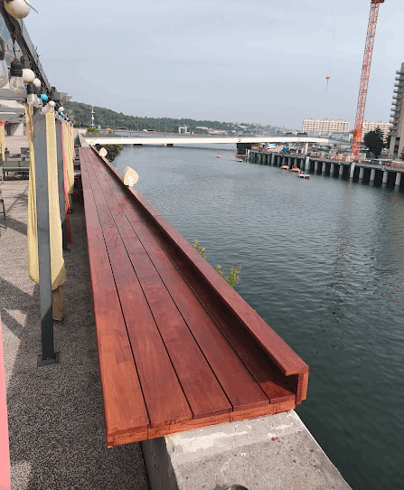
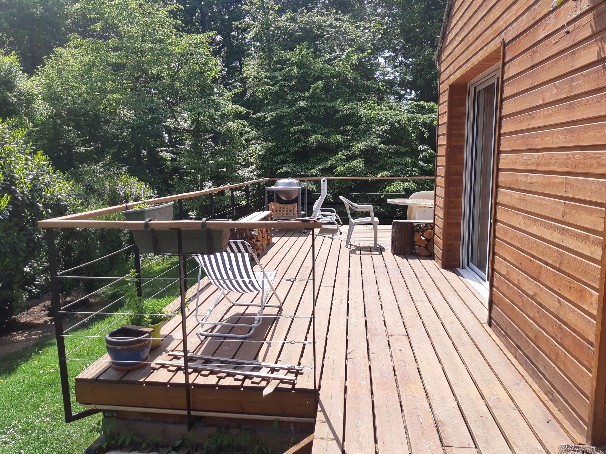
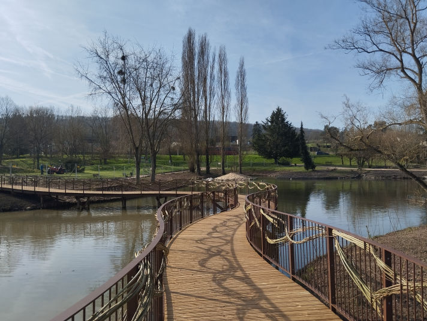
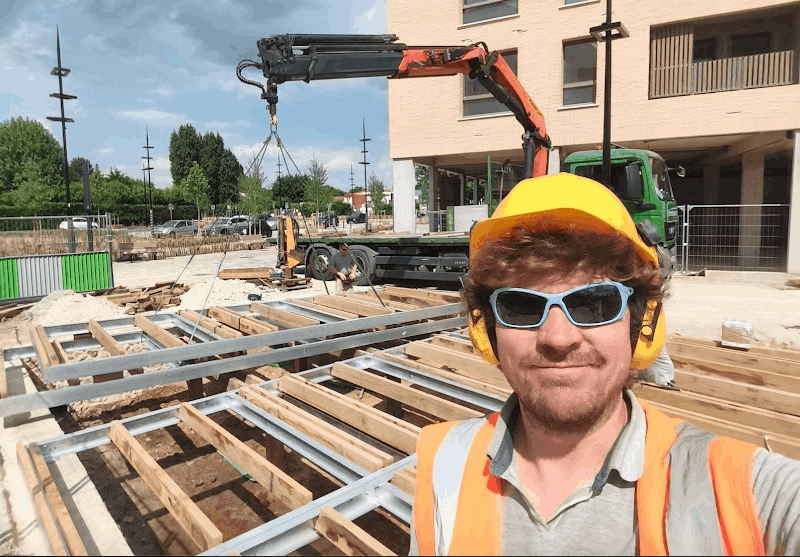
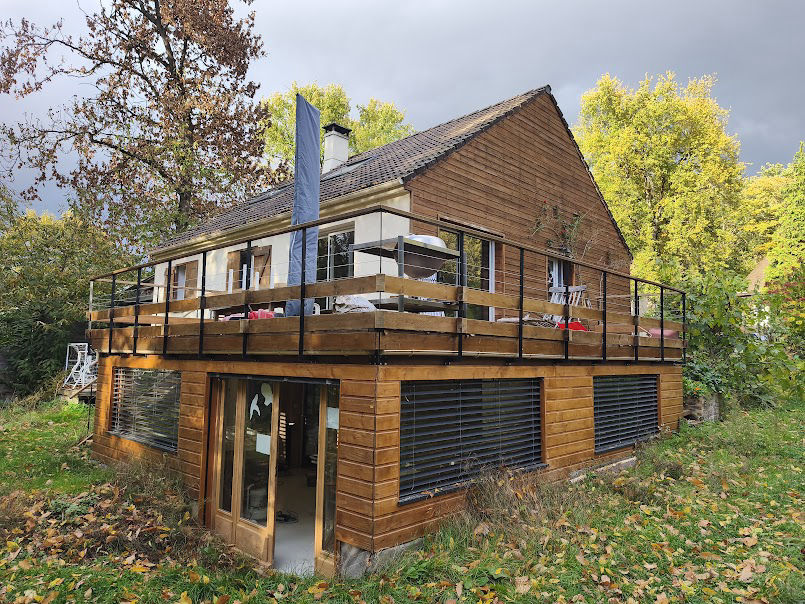
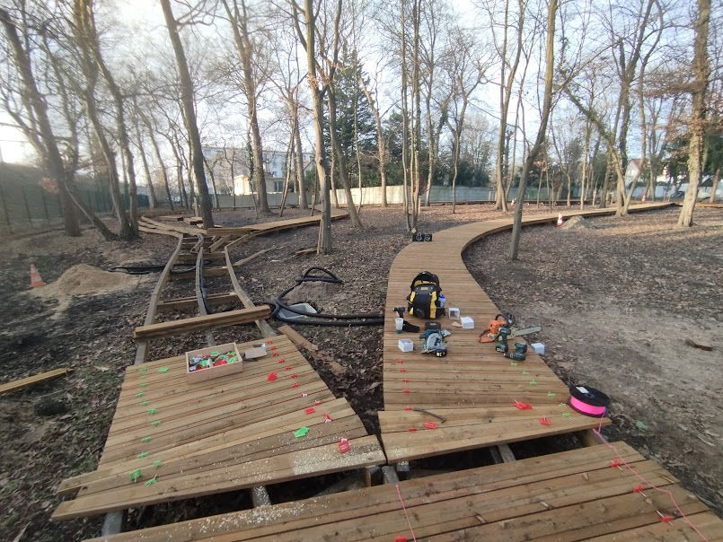
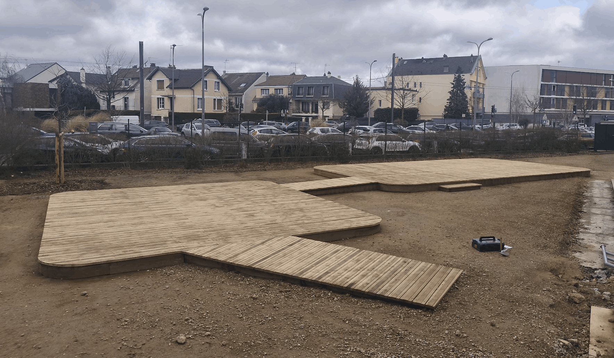
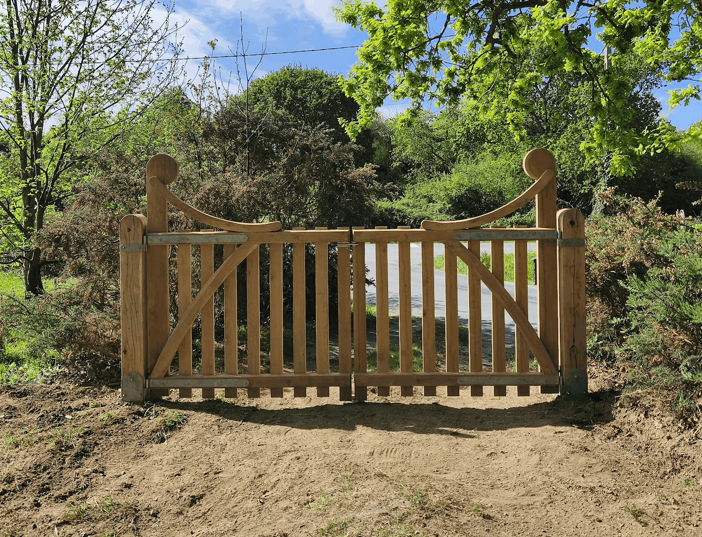

Container aménagé pour un bar d'extérieur, stockage ou animation

Bar à cocktails – La Seine Musicale, Paris

Terrasse sur pilotis, baie vitrée, bardage en mélèze et garde-corps sur mesure

Passerelle en pin autoclave sur ossature métallique — Chevreuse (78)

Terrasse bois exotique — garde-corps sur mesure découpé au laser et peinture époxy

Terrasse en chêne massif sur ossature métallique — Saint-Quentin-en-Yvelines (78)

Agrandissement ossature bois — menuiseries en chêne massif + store

400 m de passerelle dans les bois en pin autoclave

150 m² de terrasse sur pilotis chêne massif surplombant la plaine de Versailles (78)

150 m² de bain de soleil chêne massif — Piscine de Vélizy (78)

Portail en chêne massif — Saint-Lunaire (35)

Des lapins pour Noël !